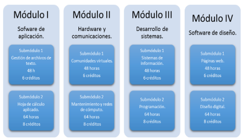
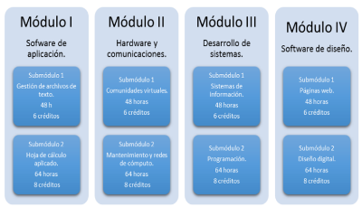
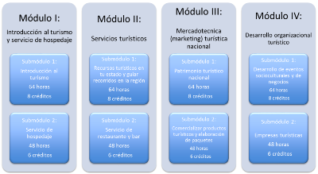
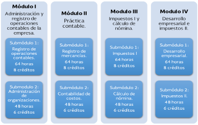
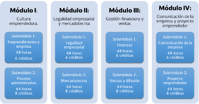
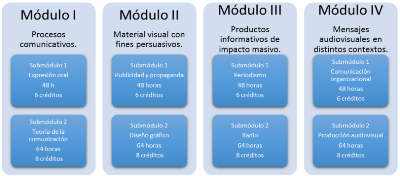

Capacitaciones
Tecnologias de la informacion
 

La capacitacion de Tecnologias de la Informacion y Comunicacion pertenece al campo disciplinar de Comunicacion.
Desarrolla en el estudiante las habilidades comunicativas, verbales y no verbales para expresarse a traves de diversos codigos y herramientas del lenguaje a traves de las diferentes tecnologias de la informacion. Por otra parte, las Tecnologias de la Informacion y Comunicacion se vinculan de manera interdisciplinar tanto con el campo de Matematicas como con el de Comunicacion, ya que aportan los elementos para la resolucion de problemas mediante los algoritmos y la programacion.
Su proposito es desarrollar la capacidad para proponer soluciones a problemas del contexto laboral y escolar, mediante la aplicacion de Tecnologias de la Informacion y de la Comunicacion, forma creativa e innovadora, con una postura etica y responsable como ciudadano digital.
Turismo
Reconoce los servicios turisticos, patrimonio cultural y su ubicacion geografica, atraves del reconocimiento del marco legal, los tipos de alojamiento, el servicio de restaurant y bar, el desarrollo de negocios con potencial turistico.
Se enseña toda parte de introduccion hacia el turismo, tipos de turismo, planta turistica e introduccion a los diferentes departamentos de un hotel, eso solo se ve en tercer semestre, despues de este se ven varios aspectos y diferentes temas a tratar tales como departamentos importantes de division de cuartos, reservaciones, atractivos turisticos de la republica mexicana. Para concluir se ve lo que es servicio de alimentos y bebidas, planeacion y realizacion de eventos.
Tiene como proposito valorar la importancia del sector turistico a nivel nacional e internacional.
Contabilidad
Se encuentra centrada en el campo disciplinar de Ciencias Sociales.
Su proposito es desarrollar las competencias y habilidades practicas que permitan de forma etica y responsable aplicar el proceso contable y administrativo para el uso de la informacion financiera, la cual debe ser veraz, confiable y oportuna para la toma de decisiones en beneficio de la entidad y el sector economico en el que se desarrolle.
Administracion
La capacitacion para el trabajo en Administracion pertenece al campo disciplinar de las Ciencias Sociales.
Permite al alumno representar la realidad de su entorno social, para transformarla mediante la apropiacion de conocimientos, el descrubiemiento de significados, la generacion de ideas y transmitirlas eficazmente.
Trata sobre la administracion en general, enseña cosas basicas, teoria, conceptos, como crear un producto para que sea bien visto por los clientes, el como tratar a los clientes, como hacer productos mas interesantes que tenga que ver con el cuidado del medio ambiente, el crear una empresa, saber como hacerlo, una persona moral, como manejar la conomia, como archivar los documentos , de igual manera entra el marketing.
Tiene como proposito proporcionar herramientas y favorecer al desarrollo de habilidades y actitudes para que el estudiante estructure proyectos, sustentables, viables y factibles en el contexto en el que vive con una vision emprendedora.
Comunicacion
Pertenece al campo disciplinar de comunicacion y humanidades.
Desarrolla conocimientos y habilidades para analizar, elaborar y diseñar mensajes utilizando la radio y la television, entre otros medios, crean publicidad y propaganda, de igual manera se incluye el trabajo en equipo,
Su proposito es descubrir habilidades comunicativas de forma informada y asertiva para concretar productos diversos como: textos, discursos, graficos y audiovisuales innovadores como impacto masivo que alcancen las expectativas de un posible cliente u organizacion y contemplen las necesidades de su contexto.
Su proposito es descubrir habilidades comunicativas de forma informada y asertiva para concretar productos diversos como: textos, discursos, graficos y audiovisuales innovadores como impacto masivo que alcancen las expectativas de un posible cliente u organizacion y contemplen las necesidades de su contexto.